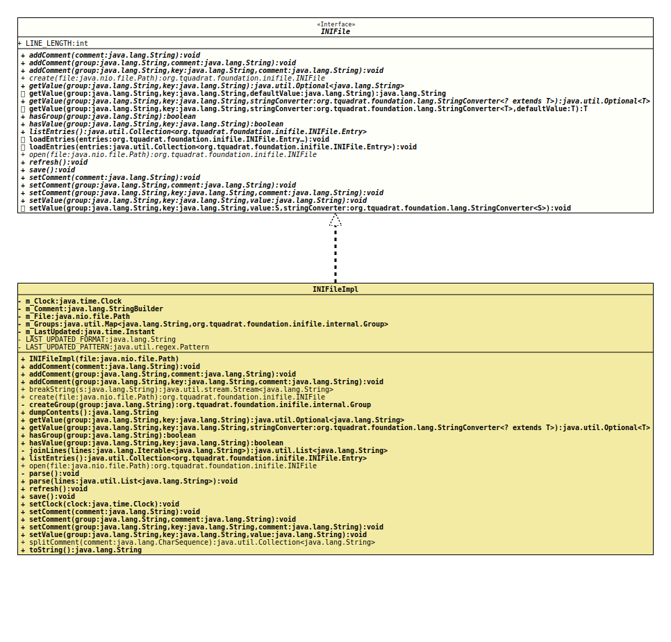

- All Known Implementing Classes:
INIFileImpl
- Note:
-
- Changes will not be persisted automatically!
- Author:
- Thomas Thrien (thomas.thrien@tquadrat.org)
- Version:
- $Id: INIFile.java 1105 2024-02-28 12:58:46Z tquadrat $
- Since:
- 0.1.0
- UML Diagram
-

UML Diagram for "org.tquadrat.foundation.inifile.INIFile"
{kind=link}
-
Nested Class Summary
Nested ClassesModifier and TypeInterfaceDescriptionstatic final recordAn entry for the INI file. -
Field Summary
FieldsModifier and TypeFieldDescriptionstatic final intThe line length for an INI file: 75. -
Method Summary
Modifier and TypeMethodDescriptionvoidaddComment(String comment) Adds the given comment to the INI file.voidaddComment(String group, String comment) Adds the given comment to the given group.voidaddComment(String group, String key, String comment) Adds the given comment to the value that is identified by the given group and key.static INIFileCreates an empty INI file.Retrieves the value for the given key from the given group.default StringRetrieves the value for the given key from the given group.<T> Optional<T> getValue(String group, String key, StringConverter<? extends T> stringConverter) Retrieves the value for the given key from the given group.default <T> TgetValue(String group, String key, StringConverter<T> stringConverter, T defaultValue) Retrieves the value for the given key from the given group.booleanChecks whether the INI file contains a group with the given name.booleanChecks whether the INI file contains an entry with the given key.Returns all entries of the INI file.default voidloadEntries(Collection<INIFile.Entry> entries) Loads the entries for the INI file.default voidloadEntries(INIFile.Entry... entries) Loads the entries for the INI file.static INIFileOpens the given INI file and reads its contents.voidrefresh()Re-reads the values.voidsave()Saves the contents of the INI file to the file that was provided tocreate(Path)oropen(Path).voidsetComment(String comment) Sets the given comment to the INI file.voidsetComment(String group, String comment) Sets the given comment to the given group.voidsetComment(String group, String key, String comment) Sets the given comment to the value that is identified by the given group and key.voidStores the given value with the given key to the given group.default <S> voidsetValue(String group, String key, S value, StringConverter<S> stringConverter) Stores the given value with the given key to the given group.
-
Field Details
-
LINE_LENGTH
The line length for an INI file: 75.- See Also:
-
-
Method Details
-
addComment
Adds the given comment to the INI file.
The new comment will be appended to an already existing one.
- Parameters:
comment- The comment.
-
addComment
Adds the given comment to the given group.
The new comment will be appended to an already existing one.
- Parameters:
group- The group.comment- The comment.
-
addComment
Adds the given comment to the value that is identified by the given group and key.
The new comment will be appended to an already existing one.
- Parameters:
group- The group.key- The key for the value.comment- The comment.
-
create
Creates an empty INI file. If the file already exists, it will be overwritten without notice.
The given file is used to store the value on a call to
save().- Parameters:
file- The file.- Returns:
- The new instance.
-
getValue
Retrieves the value for the given key from the given group.- Parameters:
group- The group.key- The key for the value.- Returns:
- An instance of
Optionalthat holds the retrieved value.
-
getValue
Retrieves the value for the given key from the given group.- Parameters:
group- The group.key- The key for the value.defaultValue- The value that will be returned if no other value could be found; can benull.- Returns:
- The value.
-
getValue
Retrieves the value for the given key from the given group.- Type Parameters:
T- The target type.- Parameters:
group- The group.key- The key for the value.stringConverter- The implementation ofStringConverterthat is used to convert the stored value into the target type.- Returns:
- An instance of
Optionalthat holds the retrieved value.
-
getValue
default <T> T getValue(String group, String key, StringConverter<T> stringConverter, T defaultValue) Retrieves the value for the given key from the given group.- Type Parameters:
T- The target type.- Parameters:
group- The group.key- The key for the value.stringConverter- The implementation ofStringConverterthat is used to convert the stored value into the target type.defaultValue- The value that will be returned if no other value could be found; can benull.- Returns:
- The value.
-
hasGroup
Checks whether the INI file contains a group with the given name.
This method will not throw an exception for an invalid group name; instead it returns
false.- Parameters:
group- The group.- Returns:
trueif there is a group with the given name,falseotherwise.
-
hasValue
Checks whether the INI file contains an entry with the given key.
This method will not throw an exception for an invalid group name or an invalid key; instead it returns
false.- Parameters:
group- The group.key- The key.- Returns:
trueif there is an entry with the given key,falseotherwise.
-
listEntries
Returns all entries of the INI file.- Returns:
- The entries.
-
loadEntries
Loads the entries for the INI file.- Parameters:
entries- The entries.
-
loadEntries
Loads the entries for the INI file.- Parameters:
entries- The entries.
-
open
Opens the given INI file and reads its contents. If the file does not exist yet, a new, empty file will be created.- Parameters:
file- The file.- Returns:
- The new instance.
- Throws:
IOException- A problem occurred when reading the file.
-
refresh
Re-reads the values.- Throws:
IOException- A problem occurred when reading the file.
-
save
Saves the contents of the INI file to the file that was provided tocreate(Path)oropen(Path). This method has to be called to persist any changes made to the contents of the INI file.- Throws:
IOException- A problem occurred when writing the contents to the file.
-
setComment
Sets the given comment to the INI file.
The new comment will replace any already existing comment.
- Parameters:
comment- The comment.- Since:
- 0.4.3
-
setComment
Sets the given comment to the given group.
The new comment will replace any already existing comment.
- Parameters:
group- The group.comment- The comment.- Since:
- 0.4.3
-
setComment
Sets the given comment to the value that is identified by the given group and key.
The new comment will replace any already existing comment.
- Parameters:
group- The group.key- The key for the value.comment- The comment.- Since:
- 0.4.3
-
setValue
Stores the given value with the given key to the given group.- Parameters:
group- The group.key- The key.value- The value.
-
setValue
Stores the given value with the given key to the given group.- Type Parameters:
S- The source type for the value.- Parameters:
group- The group.key- The key.value- The value.stringConverter- The instance ofStringConverterthat is used to convert the value to a String.
-